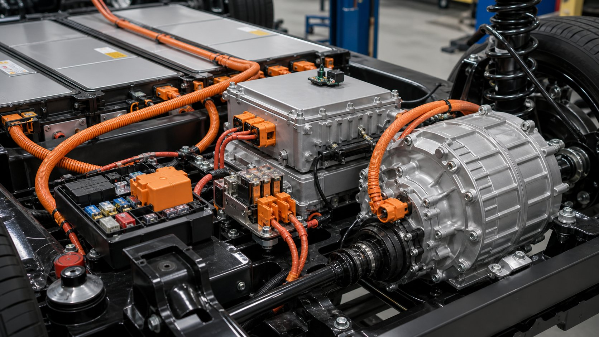

Qué cubre esta guía
- ¿Qué es un kit de conversión a coche eléctrico?
- Tipos de kits de conversión disponibles
- Componentes principales y qué verificar
- Cuánto cuesta convertir un auto a eléctrico
- Cómo estimar la autonomía real
- Proceso de conversión paso a paso
- Normativa, homologación y seguros
- Seguridad eléctrica de alto voltaje
- Errores comunes y cómo evitarlos
- ¿Conviene económicamente? Cálculo rápido
- Preguntas frecuentes
¿Qué es un kit de conversión a coche eléctrico?
Un kit de conversión a coche eléctrico (también llamado EV conversion kit) es un conjunto de componentes que permite reemplazar el motor de combustión interna de un vehículo por un tren motriz eléctrico: motor eléctrico, controlador/inversor, pack de baterías, sistema de gestión de batería (BMS), cargador embarcado y cableado de alto voltaje. En vez de diseñar cada pieza desde cero, el kit entrega componentes dimensionados para trabajar juntos.
La idea no es nueva —los aficionados convierten vehículos desde los años 70 con motores de corriente continua y baterías de plomo—, pero tres cambios recientes la hicieron práctica para un público mucho más amplio: los motores de corriente alterna de imanes permanentes bajaron de precio, las celdas de litio (sobre todo LFP) ofrecen buena densidad energética a costo decreciente, y existe documentación abierta y comunidades activas que comparten planos de adaptadores, esquemas eléctricos y lecciones aprendidas.
Advertencia editorial honesta: una conversión rara vez es más barata que comprar un eléctrico usado equivalente. Su valor está en conservar un vehículo con valor sentimental (clásicos, vehículos de trabajo, utilitarios), en el aprendizaje técnico y, en algunos países, en incentivos o menores costos de operación. Esta guía está escrita para que evalúes tu caso con números realistas, no con promesas de marketing.
Tipos de kits de conversión disponibles
No todos los kits resuelven el mismo problema. Antes de comparar precios, identifica qué tipo se ajusta a tu vehículo donante, a tu presupuesto y a tu nivel de experiencia.
| Tipo de kit | Qué incluye | Ideal para | Complejidad |
|---|---|---|---|
| Kit universal | Motor, controlador, acelerador electrónico y cableado básico | City cars pequeños, buggies, réplicas ligeras | Media — requiere fabricar soportes y adaptador de caja |
| Kit específico por modelo | Componentes dimensionados + soportes y adaptadores para un modelo exacto | Clásicos populares (p. ej., escarabajos, 4L, Mini) | Baja-media — menos fabricación, más costo |
| Unidad "crate" / drop-in | Módulo completo motor + inversor + caja, listo para atornillar | Pickups y SUVs con espacio en vano motor | Media — instalación ordenada, integración eléctrica exigente |
| Eje eléctrico (e-axle) | Motor, reducción y diferencial integrados en un eje | Vehículos de tracción trasera, furgonetas | Media-alta — modifica suspensión y geometría |
| Conversión con tren motriz de donante EV | Motor, batería y electrónica recuperados de un eléctrico accidentado | Proyectos con presupuesto ajustado y alto conocimiento | Alta — integración de CAN, BMS y seguridad propietarios |
Un patrón que se repite en los proyectos bien documentados: el kit específico por modelo parece caro al inicio, pero suele terminar siendo más barato en horas de taller y piezas improvisadas. El ahorro aparente del kit universal se evapora si tienes que pagar la fabricación de un adaptador de campana, soportes de motor calados por CNC y múltiples iteraciones de prueba.
Componentes principales y qué verificar en cada uno
- Motor eléctrico. Los más usados en conversiones son los trifásicos de corriente alterna (inducción o imanes permanentes), típicamente entre 30 kW y 120 kW para vehículos livianos. Verifica: potencia continua (no solo la de pico), curva de torque, masa, tipo de refrigeración y voltaje nominal — el voltaje debe coincidir con tu pack de baterías.
- Controlador / inversor. Convierte la corriente continua de la batería en alterna trifásica y gestiona torque, regeneración y límites térmicos. Debe estar emparejado de fábrica con el motor o ser configurable con documentación abierta; un controlador genérico mal parametrizado es la causa número uno de motores sobrecalentados.
- Pack de baterías. El componente más caro y el que define la autonomía. Compara química LFP (más ciclos de vida, más segura térmicamente, menos densidad) contra NMC (más densidad energética, más sensible al calor). Verifica: energía total en kWh, energía útil real (normalmente 80–90 % de la total), voltaje de trabajo, corriente máxima de descarga y ciclos garantizados.
- BMS (sistema de gestión de batería). Protege cada celda contra sobrecarga, sobredescarga, temperatura y corriente excesiva. Sin BMS bien configurado el pack se degrada rápido o se vuelve un riesgo. Verifica compatibilidad con la química, número de celdas en serie y protocolo de comunicación con el cargador.
- Cargador embarcado. Define cuánto demora cargar en casa: un cargador de 3,3 kW carga ~20 kWh en 6–7 horas; uno de 6,6 kW, la mitad. Comprueba que sea compatible con la red monofásica doméstica de tu país y con el conector que usarás.
- Convertidor DC-DC (12 V). Reemplaza la función del alternador: mantiene la batería de 12 V que alimenta luces, limpiaparabrisas, radio y centralitas. Dimensiona al menos el consumo simultáneo de todo lo eléctrico del auto más un margen del 30 %.
- Accesorios mecánicos. Adaptador de caja de cambios o placa de acoplamiento directo, soportes de motor, bomba de vacío para el servofreno (los EV no tienen vacío de admisión), dirección asistida eléctrica o electrohidráulica si el donante la requiere, y calefacción del habitáculo (el motor eléctrico casi no produce calor residual).
- Seguridad eléctrica. Contactores principales, fusibles de alta ruptura por cada rama del pack, interruptor de desconexión de servicio accesible, cableado naranja identificado como alto voltaje y relé de enclavamiento (interlock) que corte el sistema si se abre una cubierta.
Cuánto cuesta convertir un auto a eléctrico
Estas cifras son rangos orientativos editoriales de 2026, reunidos a partir de listas de precios públicas de proveedores y proyectos documentados. Tipo de cambio referencial: ~$950 CLP por dólar. Los costos varían mucho por país, aranceles de importación y mano de obra: úsalos para estructurar tu presupuesto, no como cotización.
| Partida | Rango típico (USD) | Rango aprox. (CLP) | Nota técnica |
|---|---|---|---|
| Kit motor + controlador | US$3.000 – 8.000 | $2.850.000 – 7.600.000 | Sube con potencia continua y refrigeración líquida |
| Pack de baterías (15–30 kWh) | US$5.000 – 15.000 | $4.750.000 – 14.250.000 | Celdas nuevas LFP al inicio del rango difícilmente; módulos recuperados bajan el costo pero exigen más verificación |
| Cargador, BMS y DC-DC | US$1.500 – 4.000 | $1.425.000 – 3.800.000 | No ahorres aquí: es el sistema nervioso del pack |
| Cableado HV, contactores, fusibles | US$500 – 1.500 | $475.000 – 1.425.000 | Cable naranja certificado y conectores con interlock |
| Adaptadores y fabricación mecánica | US$800 – 3.000 | $760.000 – 2.850.000 | Menor si el kit es específico para tu modelo |
| Mano de obra especializada | US$3.000 – 10.000 | $2.850.000 – 9.500.000 | Depende de horas: 80–200 h son típicas en taller |
| Homologación y trámites | Variable por país | Variable por país | Consulta antes de comprar nada (ver sección de normativa) |
| Total típico del proyecto | US$13.000 – 40.000+ | $12.350.000 – 38.000.000+ | El rango alto incluye baterías grandes y mano de obra completa |
Tres aprendizajes repetidos en la comunidad: primero, el pack de baterías y la mano de obra suman habitualmente más del 60 % del presupuesto —optimizar el motor rara vez mueve la aguja. Segundo, deja un colchón del 15–20 % para imprevistos: herrajes rotos, repintado del vano motor o correcciones eléctricas siempre aparecen. Tercero, si tu única motivación es económica, compara primero contra un eléctrico usado equivalente; la conversión gana cuando el donante tiene valor propio o uso intensivo (flotas, vehículos de reparto urbano).
Cómo estimar la autonomía real de tu conversión
La autonomía de una conversión se estima con una división simple — la que falla es la honestidad con los datos de entrada. Usa la energía útil de la batería (no la nominal) y un consumo medido en vehículos similares, no el consumo de un eléctrico nuevo y aerodinámico.
Autonomía estimada (km) = Energía útil (kWh) ÷ Consumo (kWh/km)
Ejemplo 1 · City car convertido (uso urbano):
22 kWh útiles ÷ 0,17 kWh/km ≈ 129 km
Ejemplo 2 · Sedán mediano con AC y carretera:
32 kWh útiles ÷ 0,21 kWh/km ≈ 152 km
Regla práctica de peso:
cada 100 kg adicionales ≈ +3 % a +5 % de consumo urbano
Descuentos realistas a tu estimación:
uso de calefacción en invierno: −10 % a −25 %
conducción sostenida a 100+ km/h: −15 % a −30 %
batería ya degradada (año 5+): −10 % a −20 %El consumo base se puede estimar desde el peso del vehículo: autos convertidos livianos (900–1.100 kg) rondan 0,14–0,18 kWh/km; medianos (1.200–1.500 kg), 0,18–0,24 kWh/km. Si tu cálculo te da una autonomía "demasiado buena", probablemente usaste la energía nominal del pack o un consumo ajeno a tu carrocería. La regeneración ayuda en ciudad (recupera típicamente 5–15 % de la energía), pero no compensa una batería subdimensionada en carretera, donde la resistencia aerodinámica domina.
Proceso de conversión paso a paso
Una conversión ordenada sigue una secuencia que evita desarmar dos veces. Este es el flujo que recomiendan los talleres especializados y las guías de proyectos documentados:
- Evaluación del vehículo donante. Chasis sano sin corrosión estructural, suspensión y frenos en buen estado (soportarán más peso), y espacio medido para baterías: vano motor, túnel de transmisión, cajuela o bajo el piso trasero. Un donante liviano con buena aerodinámica vale más que uno potente.
- Trámites previos. Antes de desarmar, confirma con la autoridad competente que la conversión será inscribible/homologable y qué documentación te exigirán (facturas, certificados de instalación, informes técnicos). Descubrir esto al final es el error más caro de todos.
- Retiro del tren motriz térmico. Motor, caja (según arquitectura), tanque de combustible, escape, radiador y líneas de combustible. Descontamina y etiqueta todo lo que revenderás — el motor original de un clásico puede financiar parte del proyecto.
- Diseño y montaje mecánico. Fabrica o instala soportes de motor y el adaptador de transmisión; define el reparto de baterías buscando una distribución de peso cercana a la original (idealmente 50/50 y baja). Refuerza suspensión si el sobrepeso supera ~10 % y verifica que los frenos sigan siendo adecuados.
- Instalación eléctrica de alto voltaje. Monta el pack con su BMS, contactores y fusibles; tiende el cableado naranja protegido mecánicamente y lejos de aristas; conecta cargador y puerto de carga. Cada conexión HV debe quedar con torque verificado y accesible para inspección.
- Instalación de baja tensión (12 V). DC-DC, bomba de vacío de frenos, calefacción, dirección asistida si aplica, instrumentación (indicador de carga, estado del BMS) y el enclavamiento de seguridad.
- Puesta en marcha y pruebas. Primera energización sobre elevadores o caballetes: verifica sentido de giro, regeneración, límites térmicos y ausencia de errores del BMS. Luego pruebas cortas en recinto cerrado, cargando al 50 % y 100 %, antes de salir a la vía pública.
- Homologación y cierre documental. Inspección técnica, inscripción de la modificación, actualización de la póliza de seguro y archivo de toda la documentación del proyecto junto al manual del vehículo.
El paso donde más proyectos se estancan es el 5: no por falta de habilidad, sino por conectores y contactores que llegan tarde o especificaciones mal cruzadas. Pide toda la parte eléctrica con planos revisados antes de desarmar el auto.
Normativa, homologación y seguros
Los requisitos para circular legalmente con un vehículo convertido cambian de un país a otro y se actualizan con frecuencia, por lo que esta guía no reemplaza la consulta a la autoridad competente (servicio de tránsito o transporte de tu país y municipalidad en el caso de la revisión técnica). Dicho esto, los patrones comunes en Latinoamérica y Europa son:
- Regularización de la modificación. Muchos países exigen inscribir el cambio de sistema de propulsión en la documentación del vehículo mediante un informe técnico firmado por un profesional habilitado o un taller certificado.
- Inspección técnica. El vehículo convertido suele pasar una inspección especial o ampliada: masas por eje, frenado, fijación de baterías, aislación eléctrica y sistemas de corte de emergencia son los puntos más revisados.
- Componentes certificados. Mantener facturas y fichas técnicas de baterías, cargador y cableado facilita enormemente el trámite; los componentes sin trazabilidad son un motivo frecuente de rechazo.
- Seguro. Declara la conversión a tu aseguradora. Una modificación no declarada puede ser causal de rechazo de cobertura exactamente cuando más la necesitas.
Seguridad eléctrica de alto voltaje
Un pack de conversión trabaja habitualmente entre 96 V y 400 V de corriente continua — niveles que pueden ser letales y que, a diferencia de la red doméstica, no cruzan por cero. El respeto al procedimiento no es opcional:
- Formación primero. Si nunca trabajaste con electricidad industrial, toma un curso de seguridad eléctrica de baja y media tensión antes de tocar el pack. En varios países es, además, un requisito legal para firmar la instalación.
- EPP siempre: guantes dieléctricos clase 0 (verificados antes de cada uso), herramientas aisladas a 1.000 V, protección ocular y nada de elementos metálicos sueltos (reloj, anillos, cadenas).
- Bloqueo y verificación (LOTO). Antes de intervenir: desconecta el interruptor de servicio, espera el tiempo de descarga del inversor indicado por el fabricante (los condensadores internos retienen carga minutos después de apagar) y verifica ausencia de tensión con un multímetro categoría III/IV.
- Una sola mano regla. Cuando sea posible, trabaja con una mano y la otra alejada del cuerpo, nunca creando un camino de corriente a través del pecho.
- Protección mecánica del pack. Las baterías van dentro de un contenedor rígido, anclado al chasis (no a la carrocería), con grado de protección acorde a su ubicación y sin aristas que fatiguen el cableado.
- Primeros respondedores. Deja una etiqueta visible de "vehículo eléctrico convertido" con el punto de corte de emergencia; es estándar en vehículos eléctricos de fábrica y tu conversión no debería ser la excepción.
Errores comunes y cómo evitarlos
| Síntoma | Causa probable | Qué hacer |
|---|---|---|
| Autonomía muy inferior a la calculada | Consumo subestimado, batería nominal vs útil, alineación y frenos que "muerden" | Mide consumo real por tramo, revisa frenos y presión de neumáticos, recalcula con energía útil |
| Motor o controlador se sobrecalienta | Refrigeración insuficiente o parámetros del controlador incorrectos | Verifica flujo de refrigerante/aire y la curva de corriente configurada; revisa la hoja de datos del motor |
| Alarmas de BMS al acelerar fuerte | Caída de tensión en celdas débiles o límite de corriente conservador | Revisa salud de módulos (voltaje bajo carga), balanceo y ajustes de corriente del BMS |
| Vibraciones al acelerar | Desalineación motor-transmisión o soportes con holgura | Inspecciona adaptador, torques de soportes y estado de crucetas/semiejes |
| La carga se interrumpe | Incompatibilidad entre cargador y BMS o sobretemperatura | Verifica protocolo de comunicación cargador-BMS y las temperaturas reportadas durante la carga |
| Batería de 12 V descargada | DC-DC subdimensionado o standby con consumo alto | Suma el consumo de accesorios en simultáneo y verifica la corriente de reposo |
| Observado en revisión técnica | Documentación incompleta o componentes sin trazabilidad | Presenta facturas, fichas técnicas y certificado de instalación antes de agendar hora |
El patrón transversal es el mismo que enseñamos en robótica educativa: calibra con datos medidos, no con expectativas. Lleva una planilla de consumo por ruta desde el primer día; es tu mejor herramienta de diagnóstico y la evidencia que un taller (o la autoridad) te pedirá.
¿Conviene económicamente? Un cálculo rápido
Con cifras de referencia para Chile (verifícalas en tu comuna): un auto de combustión que rinde 12 km/L con bencina a ~$1.300/L gasta ~$108 por km; un convertido que consume 0,18 kWh/km cargando a ~$180/kWh gasta ~$32 por km. El ahorro de ~$76 por km, conduciendo 15.000 km al año, suma ~$1.140.000 CLP anuales. Sobre un proyecto de $20.000.000, la recuperación puramente por combustible supera 15 años — más que la vida útil probable del pack.
La ecuación mejora sustancialmente con kilometrajes altos (furgones de reparto urbano que superan 40.000 km/año recuperan en 4–6 años), con precios de bencina altos y con mantenciones menores (sin aceite, bujías, embrague ni escape). Empeora si pagas toda la mano de obra en un proyecto de baja autonomía. La conclusión honesta: haz la conversión si el vehículo lo merece por sí mismo o si su uso es intensivo; no como estrategia de ahorro puro.
Conclusión
Convertir un vehículo a eléctrico es un proyecto absolutamente realizable en 2026: los kits maduran, las baterías LFP bajan de precio y la documentación comunitaria es mejor que nunca. Pero es un proyecto de ingeniería serio —motor, baterías, alto voltaje y trámites— que premia a quien planifica y castiga al impaciente. Elige un donante liviano y sano, presupuesta con margen, resuelve la homologación antes de comprar y respeta el alto voltaje como si tu vida dependiera de ello, porque literalmente así es. Si esta guía te ayudó a tomar la decisión (sea iniciar el proyecto o descartarlo a tiempo), ya cumplió su objetivo.
Preguntas frecuentes
¿Es legal convertir un auto de combustión a eléctrico?
En la mayoría de los países sí es posible, pero la conversión debe regularizarse ante la autoridad de tránsito competente: suele exigirse homologación o certificación de la modificación y aprobar una revisión técnica. Los requisitos varían por país y por año, por lo que debes confirmarlos antes de comprar el kit.
¿Cuánto cuesta un kit de conversión a coche eléctrico?
Como referencia editorial, un kit básico (motor, controlador y accesorios) suele estar entre US$3.000 y US$8.000 sin baterías. Un proyecto completo con pack de baterías, cargador, BMS e instalación profesional suele moverse entre US$10.000 y US$35.000 o más según autonomía y mano de obra. Son rangos orientativos: solicita cotizaciones actualizadas a proveedores.
¿Qué autonomía puedo esperar de una conversión?
Depende de la energía útil de la batería, el peso, la aerodinámica y tu conducción. Estímala dividiendo los kWh útiles por el consumo en kWh/km: por ejemplo, 22 kWh útiles ÷ 0,17 kWh/km ≈ 129 km en un city car convertido. Usa consumos medidos en vehículos similares, no los ciclos oficiales de autos nuevos.
¿Puedo hacer la conversión yo mismo?
La parte mecánica es abordable con experiencia de taller, pero el sistema de alto voltaje (frecuentemente 96–400 V) exige formación en seguridad eléctrica, EPP y herramientas aisladas. En muchas jurisdicciones la instalación debe ser ejecutada o firmada por un instalador autorizado para poder homologar.
¿Qué pasa con el seguro y la revisión técnica después de convertir?
Debes declarar la modificación a tu aseguradora y regularizar el vehículo. Si la conversión no está inscrita u homologada, la aseguradora puede objetar la cobertura y el auto puede no aprobar la revisión técnica. Conserva facturas, fichas técnicas y certificados de la instalación.
Este artículo es contenido editorial independiente: no contiene ubicaciones patrocinadas ni enlaces de afiliado. Si en futuras actualizaciones se agregan enlaces a proveedores de kits, serán identificados explícitamente. Las cifras de costos, autonomía y ahorro son estimaciones con supuestos declarados; verifica precios y normativa vigentes antes de invertir.
Sigue aprendiendo
Si este artículo te dejó con ganas de trabajar con celdas de litio a menor escala, nuestra otra guía completa te va a servir: Cómo reparar baterías de taladros inalámbricos: BMS y celdas, donde cubrimos diagnóstico con multímetro, reemplazo de celdas 18650/21700, soldadura por puntos y seguridad con litio — los mismos fundamentos que aplican, a otra escala, en un pack de tracción.
También puedes revisar el temario completo del blog para ver qué guías vienen en camino.
Fuentes primarias y lecturas recomendadas
Estas referencias sustentan los conceptos generales de la guía. Los requisitos legales, precios y especificaciones deben verificarse contra la documentación vigente de cada proveedor y autoridad.
- U.S. Department of Energy — Alternative Fuels Data Center: Electric Vehicles
- FuelEconomy.gov — Electric Vehicle Technology Basics
- Ministerio de Energía de Chile — Electromovilidad
Enlaces revisados: 10 de agosto de 2026.